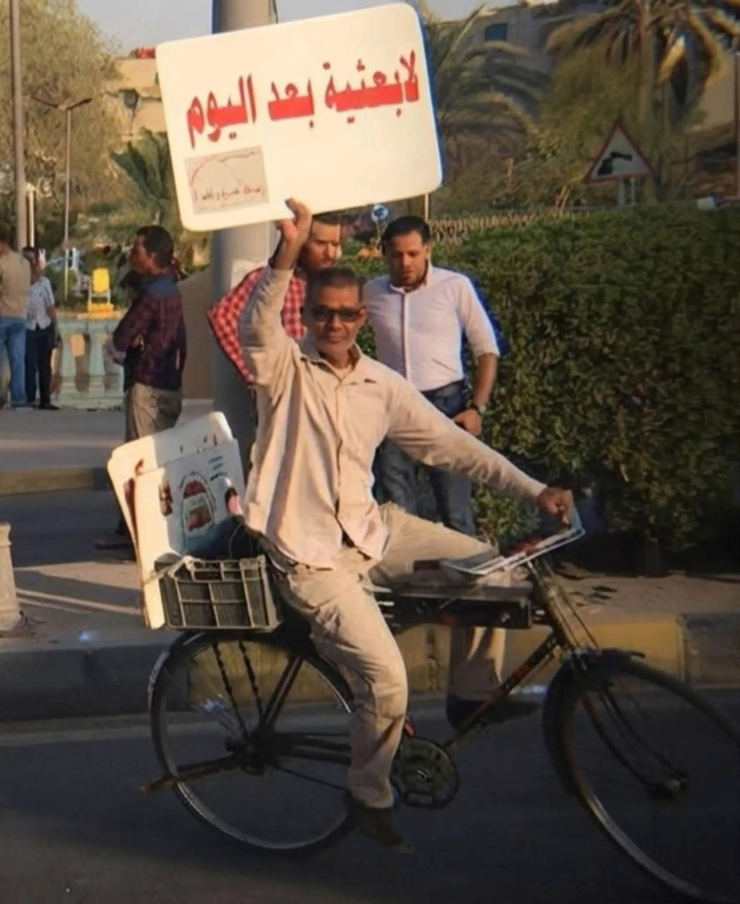
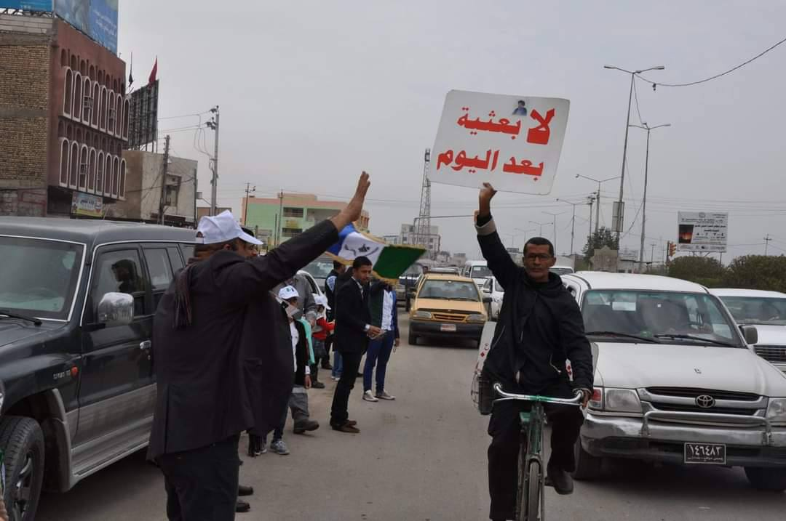

الموقف الثابت
الألم الأول: أعدم أربعة من إخوته، تعرض للسجن والتعذيب، هُدم منزل عائلته. اضطر للهروب إلى إيران.
الموقف السلمي: منذ 2003، استخدم لافتته الخشبية وسيلة للتعبير السلمي، حاملاً إياها على دراجته في الشوارع والمظاهرات.
الثبات: رفض التوقف رغم السنوات الطويلة، موضحاً أن حملها ليس مجرد شعار بل ذاكرة عائلية مؤلمة ورسالة برفض الديكتاتورية.
الإرث: بقي اسمه مرتبطاً بتلك اللافتة في ذاكرة أهالي البصرة، رمزاً للمقاومة السلمية والموقف الثابت.